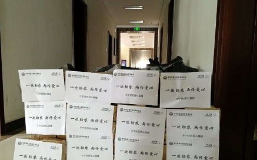
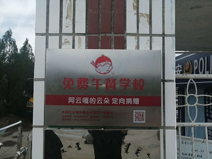
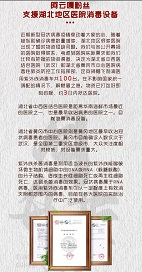

-自己组织举办了“阿云嘎”杯公益民族民间才艺大赛，获得了当地政府大力支持，让草原牧民能够展示自己，并且帮助困难牧民寻找资助。
-资助家乡公益活动《德善草原，大美前旗》
-参加《寻找心中的牧场》公益活动，帮助困难牧民
-出席《弦想中国》慈善公益晚宴
-参加扶贫晚会《出手吧，兄弟！芒果扶贫云超市大直播》,扶贫晚会两小时内阿云嘎带货的助农腊肉产品销售额突破960万元，捐赠腊肉1850斤
-疫情期间捐赠了4台制氧机，2台污水处理器，7个血氧检测仪，31架消毒车和130公斤消毒片
|  | |
疫情防控设备物资捐献 |
助农产品公益 |
-阿云嘎免费午餐爱心捐赠公益自2019年10月15日发起至今，在粉丝们热心参与下募款已达195809元
-六一为牧区小学的孩子捐赠文体用品礼盒
-发起”阿云嘎公益图书馆“项目，捐赠书籍
-珠海动物救助站公益应援
-512灾区青少年助养公益
-杭州杨绫特殊教育学校公益影院
-空巢老人救助计划
-扶贫纾困公益项目在五月一日满20万
-后援会助力精神障碍者共创戏剧
-疫情期间参与送乡村孩子洗手液#计划，定向捐助青海省玉树藏族自治州称多县完全小学
-疫情期间定向捐赠飞利浦医用紫外线消毒车共100台
-2019蚂蚁森林年度最佳绿色行动联盟伙伴
-发起阿云嘎十只羊奔小康计划
|  |  | |
阿云嘎免费午餐爱心捐赠公益 |
捐赠消毒车 |
阿云嘎·十只小羊奔小康计划 |